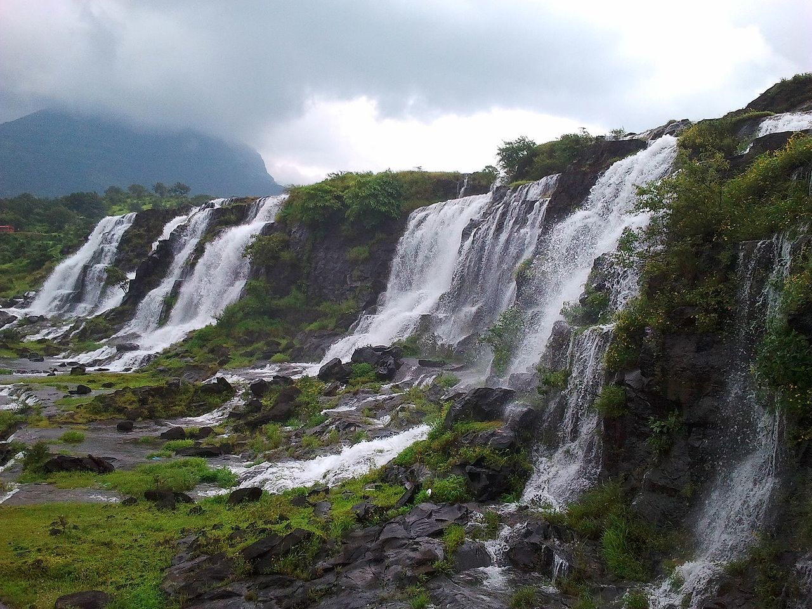
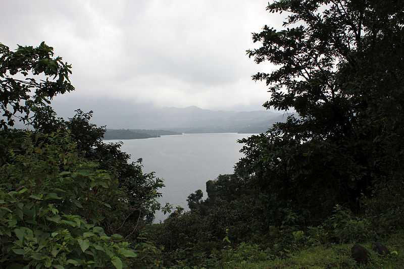
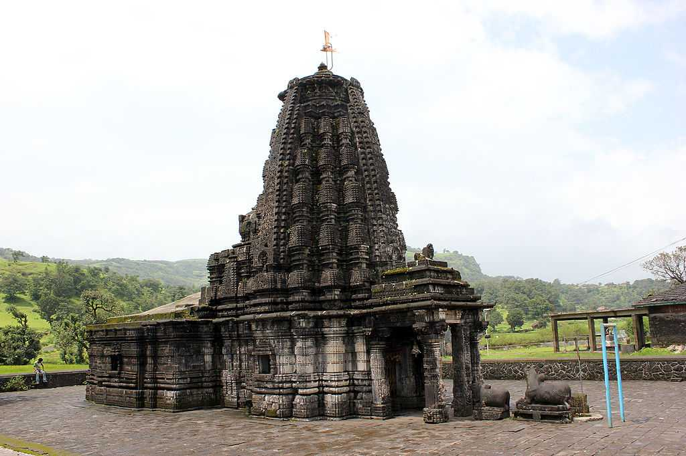

<div class="container-fluid">
    <div class="row">
        <div class="col-md-12">
            <div class="card bg-dark text-white">
                
                <div class="card-img-overlay">
                    <h5 class="card-title-main">Welcome to Bhandardara!</h5>
                </div>
            </div>

            <div class="p1 mt-3">
                <p>
                    At a distance of 70 km from Nashik, 104 km from Shirdi, 157 km from Pune and 172 km from Mumbai,
                    Bhandardara is a small hill station and a
                    holiday resort located in Ahmednagar district of Maharashtra. The place is known for its natural
                    beauty and its soothing environment.
                    It is one of the less known hill stations in Maharashtra and also one of the beautiful places to
                    visit near Mumbai city. This is also one of the popular
                    Maharashtra tourist places and also among the top places to visited as part of Lonavala tour
                    packages.

                    Bhandardara is situated at an altitude of 750 m on the banks of river Pravara. According to a
                    legend, sage Agastya meditated here for a year.
                    Pleased with his penance, Gods blessed him with a stream of river Ganga, now known as river Pravara.
                    This tiny hill station is a blend of natural beauty,
                    waterfalls, mountains, tranquility, greenery, refreshing air and pristine ambiance. It is an
                    excellent place for trekkers and a popular stopover for
                    tourists travelling to Nashik and Shirdi. It attracts a lot of tourists every year because of its
                    eco-tourism opportunities.

                </p>
            </div>
            <div class="clearfix">
                
                <p>
                    Important places to visit
                    in Bhandardara are Arthur Lake, Randha Waterfalls, Umbrella Falls, Bhandardara Dam or Wilson Dam and
                    Amruteshwar Temple.

                    Bhandardara provides plenty of opportunity for small treks and hikes for adventure lovers. The most
                    interesting and exciting trek is the small trek
                    to Ratangad Fort. It commands an excellent view all around and is said to be the favourite fort of
                    the Maratha king, Shivaji. The Harishchandragad Fort
                    was built during the 6th century, when the Kalchuri dynasty ruled. The famous Mount Kalsubai (1646
                    m), the highest peak in Maharashtra, is a favorite
                    trekking place.

                    There are many accommodation options in the form of resorts and budget hotels. All good hotels and
                    resorts are situated around the lake.
                    The MTDC Holiday Resort, Anandvaan Resort and Yash Resort are the popular accommodation options in
                    Bhandardara.

                    The best time to visit Bhandardara is from September to February when the weather is convenient to
                    explore the outdoors post monsoon.
                    It is very hot and dry during the summer season from March to May.
                </p>
            </div>
            <div class="clearfix">
                
                <p>
                    Timings: 7AM to 7PM<br>

                    Distance from Igatpuri : 40 Kms <br>

                    How to reach:<br>

                    By Air: <br>
                    The nearest airport is at Mumbai(163Kms) and daily flights from other cities as well.<br><br>

                    By Rail: <br>
                    Trains arrive here from Igatpuri, Nagpur, Bhopal and other cities.<br><br>

                    By Bus:<br>
                    Regular buses are available from Mumbai, Pune, Nashik, Shirdi and Igatpuri to reach Bhandardara.
                    <br>

                    By Road:<br>
                    Private transport is more convenient if you would like to visit places around Bhandardara.<br>
                </p>
            </div>
            <div class="card mt-5">
                <h5 class="card-header">Hotels within 10kms</h5>
                <div class="card-body">
                    <div class="row">
                        <div class="col-sm-4">
                            <div class="card">
                                
                                <div class="card-body">
                                    <h5 class="card-title">Gashmir Camping Bhandardhara</h5>
                                    <p class="card-text">With supporting text below as a natural lead-in to additional
                                        content.</p>
                                    <a href="#" class="btn btn-primary">Book Room</a>
                                </div>
                            </div>
                        </div>
                        <div class="col-sm-4">
                            <div class="card">
                                
                                <div class="card-body">
                                    <h5 class="card-title">The Lake Campus
                                    </h5>
                                    <p class="card-text">With supporting text below as a natural lead-in to additional
                                        content.</p>
                                    <a href="#" class="btn btn-primary">Book Room</a>
                                </div>
                            </div>
                        </div>
                        <div class="col-sm-4">
                            <div class="card">
                                
                                <div class="card-body">
                                    <h5 class="card-title">Starry lake Camp
                                    </h5>
                                    <p class="card-text">With supporting text below as a natural lead-in to additional
                                        content.</p>
                                    <a href="#" class="btn btn-primary">Book Room</a>
                                </div>
                            </div>
                        </div>
                        <div class="col-sm-4">
                            <div class="card mt-3">
                                
                                <div class="card-body">
                                    <h5 class="card-title">Friends Camping
                                    </h5>
                                    <p class="card-text">With supporting text below as a natural lead-in to additional
                                        content.</p>
                                    <a href="#" class="btn btn-primary">Book Room</a>
                                </div>
                            </div>
                        </div>
                    </div>
                </div>
            </div>
        </div>
    </div>
</div>